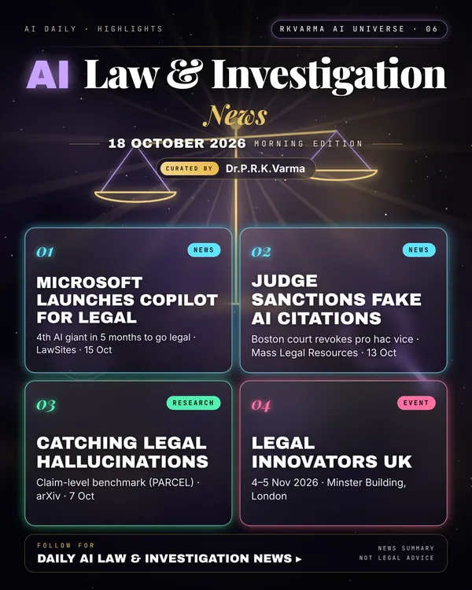

Latest updates · 18 October 2026
In the full issue →Big Tech is building legal AI, with Microsoft launching Copilot for Legal. At the same time courts and lawmakers are making clear that lawyers must verify every AI-generated citation.
Top updates
- Microsoft launches Copilot for Legal, LawNext · 15 Oct 2026: Microsoft is the fourth AI giant in five months to build a dedicated legal product.
- Boston judge sanctions lawyer for fake AI citations, Mass Legal Resources · 13 Oct 2026: In Aguilar v. Crawford Group, a federal judge sanctioned a lawyer for AI-fabricated citations and revoked his pro hac vice admission.
- California enacts SB 574, Ropes & Gray · 7 Oct 2026: The first US statute governing lawyers' use of generative AI. It requires citation verification and disclosure to courts, and takes effect on 1 Jan 2027.
- Thomson Reuters v. ROSS analysis, Loeb & Loeb · Oct 2026: An analysis of the Third Circuit's ruling on using Westlaw headnotes to train AI.
Research
- When Citations Mislead? (PARCEL), arXiv · 7 Oct 2026: A benchmark of 3,396 claims for detecting legal hallucinations claim by claim.
Upcoming events
- Legal Innovators UK 2026, 4–5 Nov 2026, The Minster Building, London: A legal-innovation and legal-tech conference.
- Legal 500 AI Summit, 18 Nov 2026, The Minster Building, London: A summit on AI in legal practice.
Why it matters
AI is becoming standard in legal work, but sanctions and new statutes make human verification of citations a professional duty.
News summary only, not legal advice.

